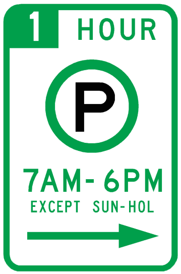
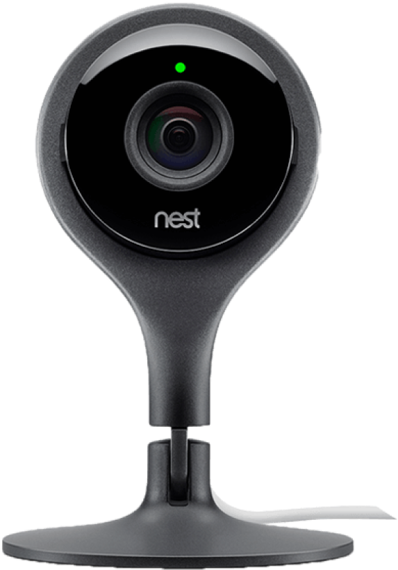
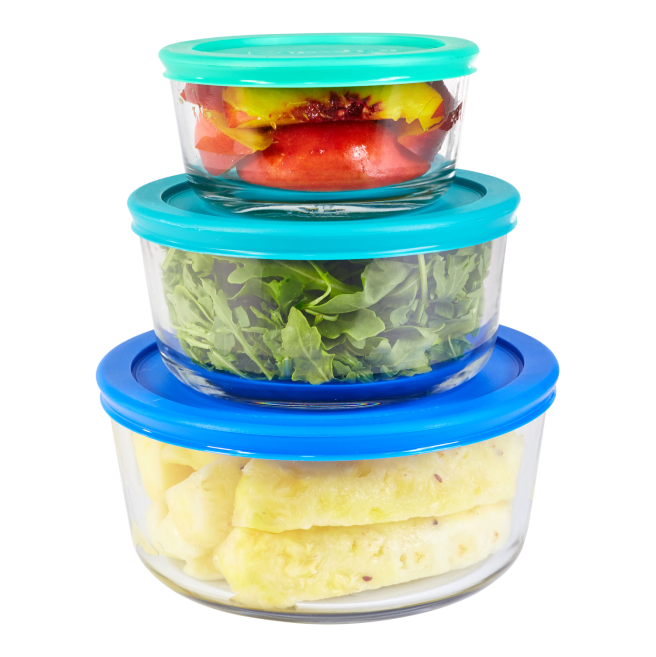
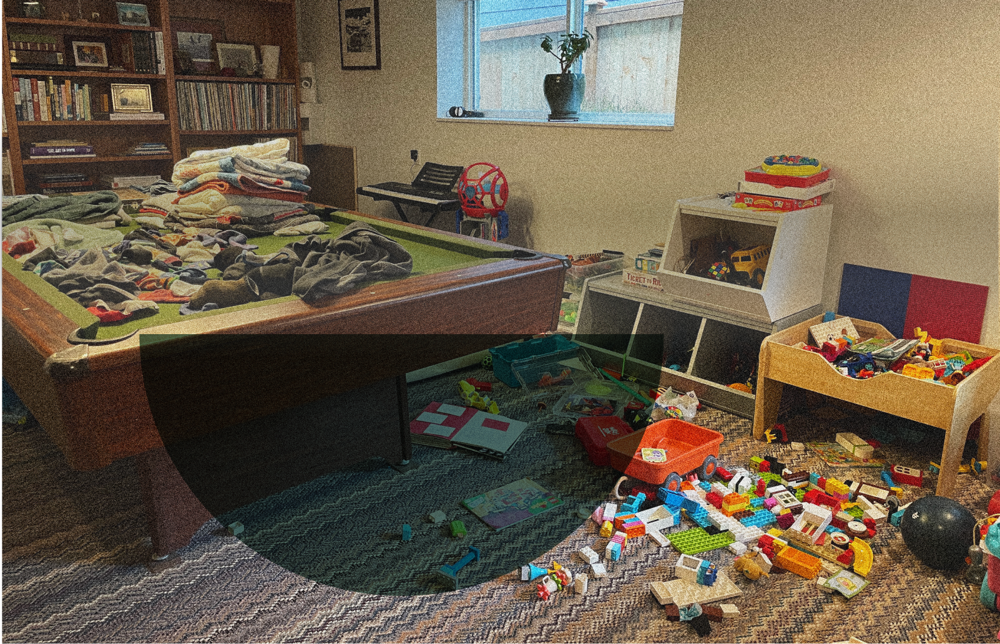

—Wendy, 56, Retired, Tacoma, WA.
“Very rarely will he see what needs to be done”
—Nancy, 39, Design Consultant, Seattle, WA.
“I don't feel like I ever have a clear mind, especially after having a toddler, and even when I'm
relaxing on the sofa, my mind is just going through all the things I need to think about or do.”
It’s much easier to quantify physical labor versus cognitive labor, making it difficult to pinpoint and define
the nature of the work.
—Nancy, 39, Design Consultant, Seattle, WA.
“I felt like my brain was constantly full....trying to figure [how to be a mom] for the first time all of
these invisible sort of silent responsibilities that I was kind of doing behind the scenes—he didn't he
didn't realize that, and so what it actually culminated in was a bunch of arguments.
The topic of cognitve labor can we difficult to bring up with a partner and changing the home dynamic can be
challenging and met with resistance.
The act of noticing and acknowledgment accounts for alot, even if the division of labor is unbalanced.
People often want to be seen and feel appreciated.
—Beth, 44, Accountant, Pacifica, CA.
“I remember saying that my time felt less valuable than his time...he talked to a sister about [my
frustrations], and she pointed out that he wouldn't be able to live the life that he wants to live if I
didn't do all of that stuff. And so he's been more sensitive to it since then.”
Cognitive labor is not often explicitly discussed in the home and the division of labor is not usually
intentionally divided amongst couples.
—Carolyn, 37, Stay-at-Home Mom, Pacifica, CA.
“I feel like we've had discussions about me being burnt out or overwhelmed or feeling tired of doing
certain things. But I don't think we've talked about specifically who does what. I feel like a lot
of times, I will just ask him for help....but not really specifically around our roles and how those could
change.”
I asked the question: What comes to mind when you envision cognitive labor?
I conducted 13 formal interviews (and had many informal conversations) and below are overarching themes
that emerged.
—Billie, 28, Stay-at-Home Parent + Gig Worker, Chattanooga, TN.
“I think a lot of the problem with cognitive labor is you don't always write things down. Sometimes you
just keep it in your head. And it's just always there.”
—Amanda, 23, Product Designer, Federal Way, WA.
“I feel like it's a really common thing that people get into arguments about, but I think they don't
say cognitive labor. They just kind of say, in other ways, like, it really bugs me that I had to do everything
to prepare for this.”
The mochi place is least busy on Thursday mornings.
Tickets are cheapest on Tuesdays so let’s book then.
Move the car in two hours!
Tell the sitter there’s a camera in the baby room.
“It feels like infinite boxes of varying size, needing to fit in a truck with limited space.”
“It’s like peeling all the layers back
of an onion.”
“It’s like a bunch of bubbles above your head constantly growing, then popping, then growing again when you
remember.”
“Like heavy weights settling on shoulders.”
Put the leftovers away.
Do we have cherry tomatoes for
the salsa tonight?
Mother’s Day is coming up. I need to order flowers so they arrive in time.




with cognitive labor
Lived experiences